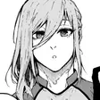
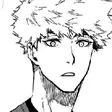
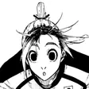

Vol. Ego02/051ª Seleção
Time Z
O quarto dos últimos do ranking descobre que, no Blue Lock, só o gol convence.
Roteiro original do fã-site, resumido e com falas parafraseadas. Não é tradução do mangá. Artes: só as fotos de ficha do site, em estilo storyboard.


Time Z: os onze piores do prédio. Isagi começa em 299º. Ali ele conhece Bachira, que dribla como se obedecesse a um monstro interior.
Bachira: Quer conhecer o meu monstro?

O Time X tem um rei: Barou decide os jogos sozinho.
Barou: Em campo, o resto é plateia.
Kuon quebra a confiança do grupo. O Time Z aprende, na pele, que no Blue Lock ninguém joga para os outros.

Chigiri, travado pelo medo de uma lesão antiga, volta a correr com tudo.
Chigiri: Ninguém aqui é mais rápido do que eu!

Último jogo do grupo: o Time V, do gênio Nagi e de Reo, o herdeiro que o descobriu.
Nagi: Que preguiça… mas, tá, isso aqui ficou divertido.
Isagi lê o campo inteiro e acha o próprio jeito de matar o lance: estar no lugar certo para o chute direto.
Isagi: Esse gol é meu.
O Time Z vence e avança. A 1ª Seleção acaba, mas o ranking continua.
Fim do capítulo 2
Personagens deste arco
 Yoichi Isagi
Yoichi Isagi- Meguru Bachira
- Shoei Barou
- Wataru Kuon

Hyoma Chigiri- Seishiro Nagi

Rensuke Kunigami
Gin Gagamaru
Jogue este arco
Teclado: ← → viram a página. No celular, deslize para os lados.